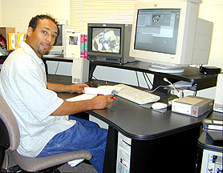

S-VHS Videography and Audio Digitization

The
Digital Video Technician: Malcolm
Mejia has worked on a variety of multimedia projects during the past
year for the Center for Social and Behavioral Sciences at CSU Monterey
Bay. His last project, for Dr. Manuel Carlos of the SBSC, was funded
by the National Endowment for the Humanities. Malcolm prepared window
dubs, an Inspiration Software storyboard of the CD-ROM, and digitized video
and audio in preparation for the assembly of the CD-ROM courseware package.
Malcolm is here pictured working to digitize audio and video from archival
footage prepared by Dr. Ruben Mendoza during the past five years at Old
Mission San Juan Bautista. The equipment pictured consists of a Media
100 digital editing suite.
Text, Photographs,
and Multimedia Copyright Ruben G. Mendoza, 2000
Main